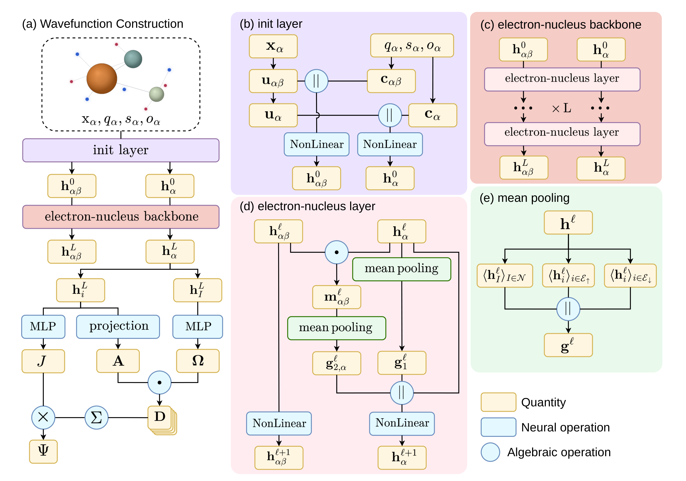
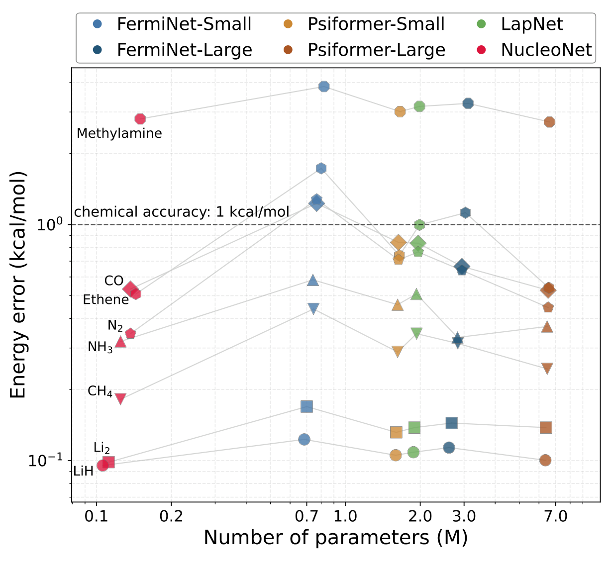
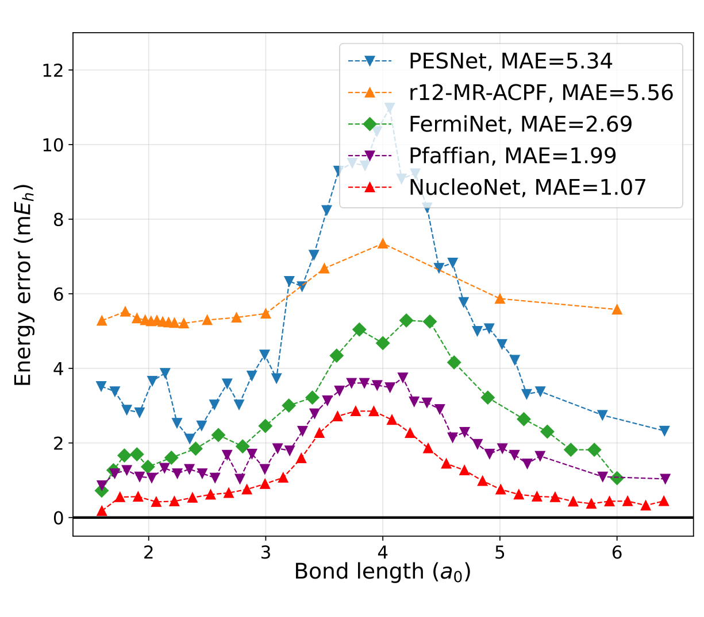
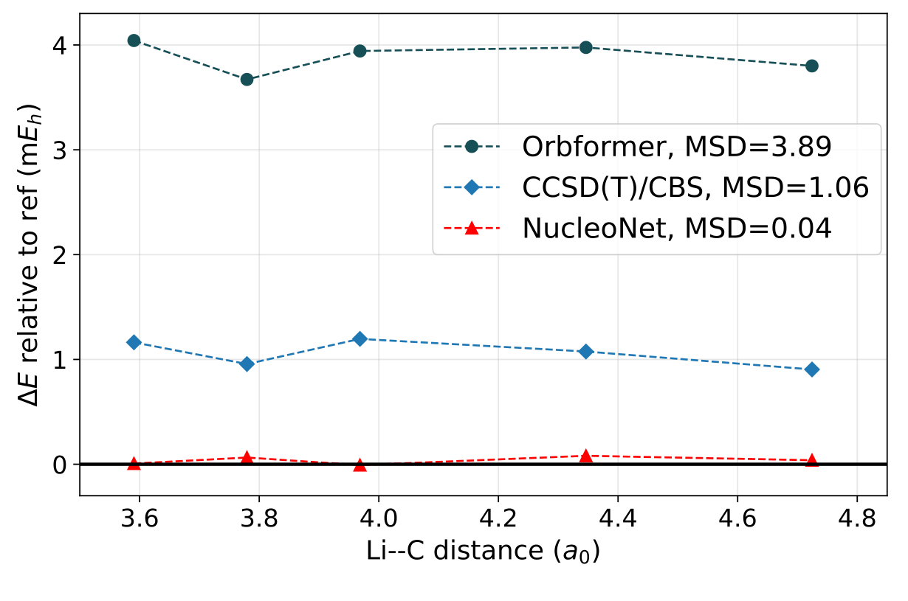
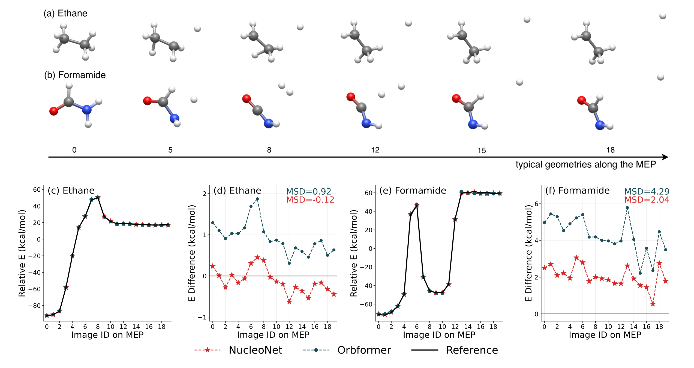
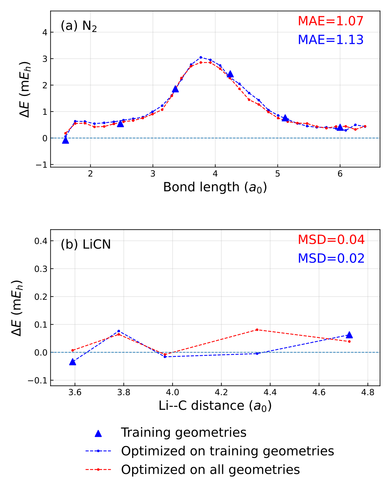
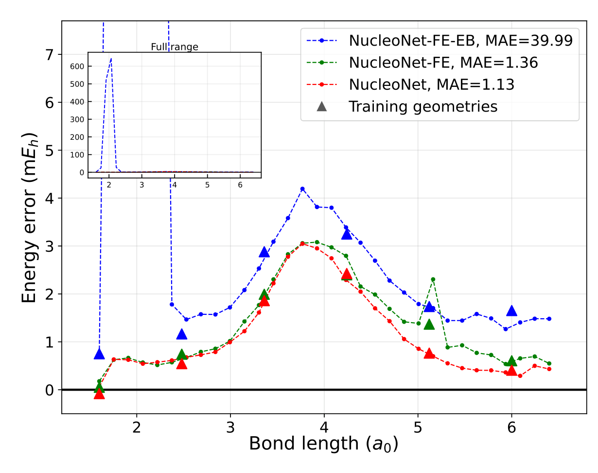

NucleoNet：让电子与原子核共同更新表示，用一个模型描述分子的多种几何
论文原文 ↗Qiao Gao 等，NucleoNet: A Nuclear-Aware Determinant Ansatz for Multi-Geometry Neural Variational Monte Carlo，arXiv，2026。官方页面｜原始 PDF
计算 N₂ 从平衡键长到断键的势能曲线，需要知道每个核间距下电子怎样分布、能量是多少。神经网络波函数可以精确求解这类问题，但许多模型针对单一核构型优化：取一系列键长，便要反复进行独立计算。
NucleoNet 将电子与原子核放入共享网络，让二者的学习表示逐层相互更新，再共同构造电子波函数。作者由此为每个分子训练一个跨几何模型，既保持小分子的变分精度，也描述断键路径，并从稀疏训练构型推广到未见几何。
方法怎样做：从统一粒子表示到满足电子反对称性的波函数
先理解变分 Monte Carlo，简称 VMC。模型接收固定核坐标与一组电子位置，输出波函数 Ψ；电子按 |Ψ|² 采样，再计算局域能量 HΨ/Ψ 的平均，调整网络参数使能量降低。这个平均是变分能量，越接近基态能量，波函数近似越好。
以某个 N₂ 键长为例，输入包括两颗氮核的位置和电荷，以及当前采样电子的位置与自旋。网络把相对向量、距离和粒子类型转成两类中间表示：每个粒子的单粒子向量，以及每一对粒子的成对向量。核坐标在该构型的电子采样中固定，不同构型之间则改变。

原图 1｜a 展示完整波函数路线；b–e 展开初始化、共享网络层和分组平均。电子表示生成轨道及相关因子，核表示生成轨道包络参数。
共享层中的成对表示像一扇门，决定源粒子的哪些信息传给目标。消息分别在原子核、上自旋和下自旋电子组内平均，再与粒子自身状态合并更新。经过多层后，核表示已经包含电子分布信息，电子也继续接收更新后的核环境；成对表示同时演化。这将核几何从一次性的外部条件变成参与整条计算链的内部表示。
最终，电子向量生成轨道数值，核向量生成轨道包络的振幅和指数衰减参数。包络规定轨道离开原子核后怎样衰减，两部分相乘形成 Slater 矩阵。矩阵行对应电子，交换同自旋电子会使行列式变号，从而满足费米子反对称性。多个行列式加权求和，再乘上正值的 Jastrow 相关因子，得到最终波函数；后者为电子相关提供额外表达能力。
多几何训练时，每个核构型分别采样电子，所有构型共享参数，优化它们变分能量的等权平均。训练后，在新的核构型固定网络参数，沿同样的电子采样与局域能量平均步骤计算能量。模型因而能复用已经学到的电子核表示，省去逐构型重新优化。
主要结果：紧凑精度、多几何能量曲线与稀疏训练泛化
更少参数达到成熟神经波函数的精度范围
在 LiH、Li₂、NH₃、CH₄、CO、N₂、乙烯和甲胺的平衡结构上，NucleoNet 使用约 0.11–0.15 百万参数，达到与 FermiNet、Psiformer、LapNet 相近的能量精度；比较模型约有 0.68–6.61 百万参数。共享电子核网络由此以紧凑表示支持高精度变分计算。

原图 2｜横轴为参数量，纵轴为相对参考能量的误差，越靠左下表示参数更少、误差更低。相同形状对应同一分子。
每个分子的一个模型覆盖连续几何变化
N₂ 在 1.6–6.4 a₀ 的 32 个键长上共同优化，覆盖压缩、平衡与三键拉伸。相对于光谱拟合的 MLR₄(6,8) 参考势，平均绝对误差为 1.07 mEₕ；图中 FermiNet、Pfaffian 和 PESNet 的文献比较值分别为 2.69、1.99、5.34 mEₕ。1 mEₕ 约为 0.628 kcal/mol，给出了曲线精度的化学尺度。

原图 3｜一个共享模型覆盖全部键长，红线显示其相对参考势的误差；不同曲线比较整个断键过程中的精度变化。
LiCN 固定 C、N，沿分子轴改变 Li–C 距离，五个几何共用一套参数。相对于逐几何独立优化的 NucleoNet 能量，共享模型的平均有符号差只有 +0.04 mEₕ，说明共同优化保持了接近独立优化的变分结果。

原图 4｜零线为独立优化的 NucleoNet；红线为五几何共享模型。MSD 汇总其有符号能量差。
乙烷与甲酰胺则把测试扩展到多个原子协同变化的最小能量路径，分别涉及 C–H 和 N–H 均裂。每个分子用一个模型共同优化 20 个路径构型。相对于已有 Psiformer 计算，乙烷平均有符号差为 −0.12 kcal/mol，甲酰胺为 +2.04 kcal/mol；所引 Orbformer 比较值分别为 +0.92 和 +4.29 kcal/mol。模型因此既描述了路径形状，也改善了相应能量水平。

原图 5｜a、b 展示路径结构；c、e 比较减去平均值后的曲线形状；d、f 展示保留能量水平差异的有符号偏差。
少量几何训练后，核表示帮助插值到新构型
N₂ 只用六个键长训练，再固定参数计算完整 32 点网格，平均绝对误差为 1.13 mEₕ，接近全部几何参与训练的 1.07 mEₕ。LiCN 仅用两个端点训练，也能计算三个中间位置，五点平均有符号差为 0.02 mEₕ。

原图 6｜三角形是训练几何，蓝线为稀疏训练模型，红线为全部几何共同训练结果。两者接近，展示表示在几何之间的迁移。
消融进一步检验核表示的作用。保留核表示更新、仅换成固定包络的 FE 模型，N₂ 误差为 1.36 mEₕ；再将主干改成只传播电子表示的 FE-EB，误差增至 39.99 mEₕ，完整模型则为 1.13 mEₕ。核表示在网络内逐层参与，因而是改善未见几何插值的关键设计。

原图 7｜三条曲线比较完整模型及两个变体。插图展开完整误差范围，突出电子主干变体在短键长附近的偏差。
对领域的贡献
NucleoNet 将原子核与电子的表示学习放入同一主干，同时通过电子行列式保持波函数所需的反对称性。紧凑参数、小分子精度、断键曲线和稀疏几何泛化，共同展示了这种表示方式的作用。
对需要一系列核构型的量子化学任务，这提供了明确的波函数共享路线：每个分子使用同一套参数，让随几何变化的核环境与电子相关表示共同调整，再计算整条能量曲线。作者强调的新增能力，正是以共同演化的核表示连接一个分子的不同几何。
原始摘要完整译文
神经网络变分 Monte Carlo 为求解电子薛定谔方程提供了一条精确途径，但许多神经波函数只针对单一核几何进行优化，因此绘制势能面需要分别开展计算。我们提出 NucleoNet，这是一种感知原子核的行列式波函数假设形式：电子和原子核组成统一的粒子集合，通过共享的电子—核主干网络传播，共同演化单粒子与双粒子表示。原子核携带可学习表示，这些表示与电子表示一同演化并为轨道构建提供条件，而反对称性仅由电子行列式施加。在平衡小分子基准上，NucleoNet 以显著更少的参数达到与既有神经波函数基线相当的精度。对于每个分子体系，一个跨几何共同优化的单一模型可以描述 N₂ 解离曲线、LiCN 中 Li 的位移，以及乙烷和甲酰胺断键的最小能量路径。对 N₂ 和 LiCN，稀疏几何训练无需进一步优化便能泛化到未见几何；N₂ 的消融实验显示，核表示通道显著改善了这种插值。这些结果表明，具有共同演化核表示的紧凑波函数，可以用同一套参数描述一个分子体系的不同几何。